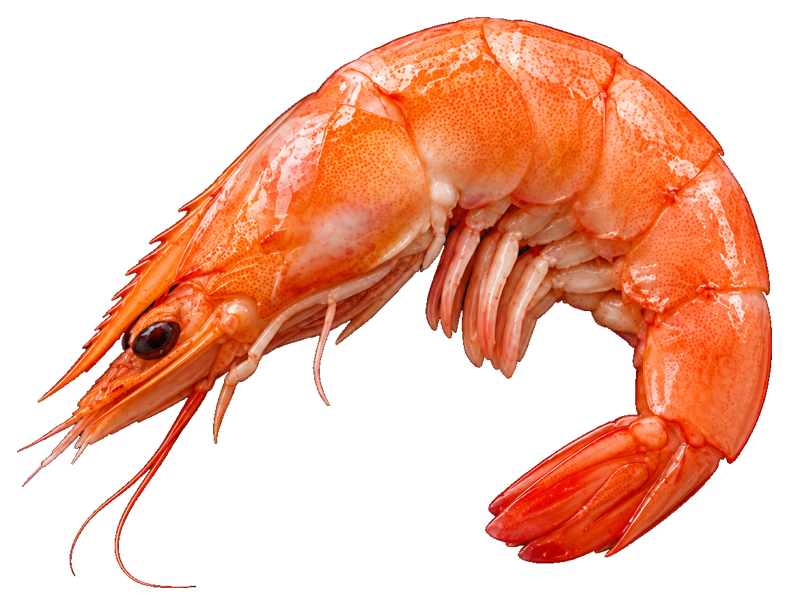
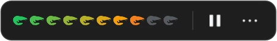
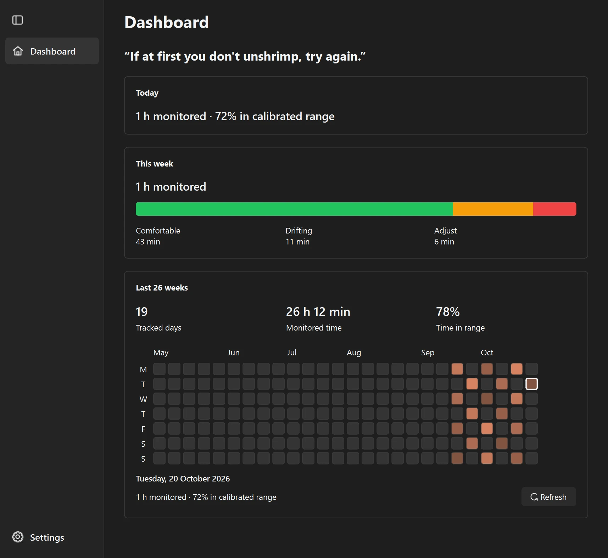
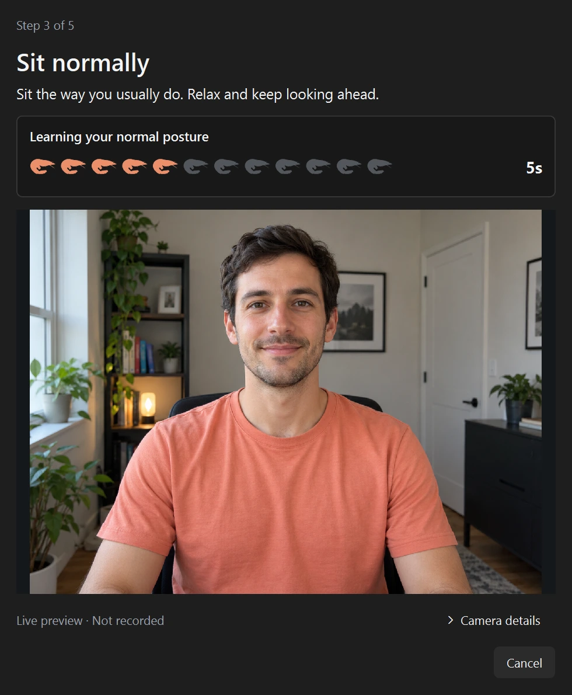
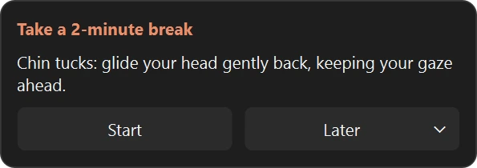
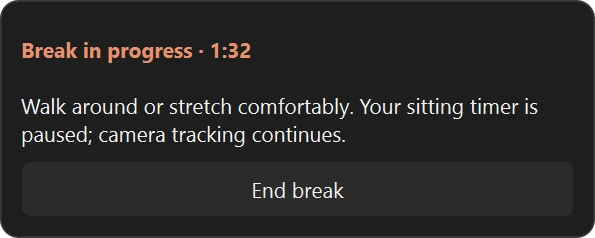
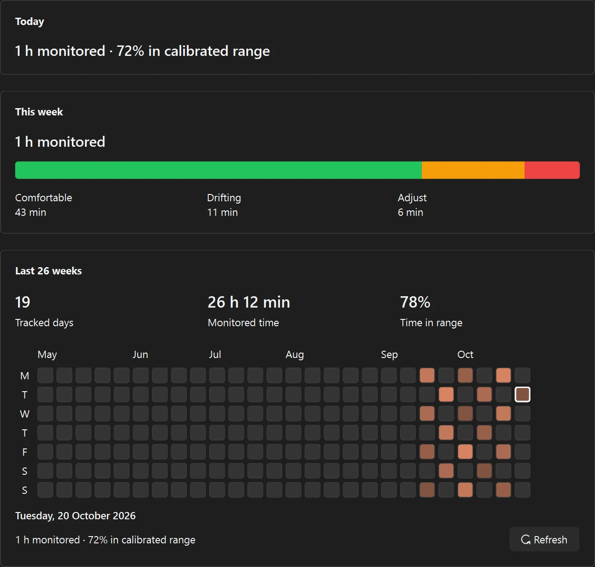

a little nudge. a lot less hunch.
don't get shrimped.
Posture checks that learn your normal. A shrimp when you slouch. A reminder when it’s time to move. Your desk habits, gently nudged.
Uses your webcam · No account · No cloud


the OSA posture system
Deep in your work.
A little less hunched.
Unshrimp checks your posture in the background and lets you know when you drift from your calibrated range.

Three signals. One personal baseline.
OSA combines head angle, head-to-shoulder position, and forward lean to notice changes in how you sit.
Room to move naturally.
Smoothing softens brief spikes. Head-turn filtering avoids scoring readings it can’t trust.
Feedback at a glance.
The meter shows the drift. Keep slouching and the shrimp appears, with optional notifications and sound.

personal OSA calibration
It starts
with your normal.
Your desk. Your chair. Your way of sitting. OSA learns the difference between your comfortable posture and your hunch.
Settle in.
Guided checks help with camera position, framing, and lighting.
Sit tall. Sit normally. Hunch.
Follow the pose instructions and shrimp countdown. Collection pauses if tracking is lost.
Check the baseline. Then go.
A final check verifies your normal sitting before you start. Recalibrate after moving your camera or changing your setup.
About a minute to set up. A baseline built around you.
a good reason to leave your desk
Your next move?
Take a little break.
A better desk habit includes getting up. Unshrimp counts detected sitting time, then reminds you to move.
- A timer that understands away. Pauses, time away, calibration, sleep, and camera outages don’t advance your reminder.
- Your interval. Your stretch. Choose when to be reminded, a 1–30 minute break, and your own stretch suggestions.
- Start now. Or a little later. Begin the countdown, snooze for 5 or 10 minutes, or skip until the next full interval.
Posture alerts and the sitting timer pause during a break. Camera tracking continues.


a little perspective
See how
your days sit.
Monitored time, a weekly posture breakdown, and an activity calendar covering up to 26 weeks. Your history stays on your machine.

Pause without a fuss.
Quick controls on the meter and in the tray. Preview the camera separately while posture tracking is paused.
Keep the work in front.
Close the dashboard and tracking stays in the tray. Optional start-at-login keeps it in the background.
Your preferred nudge.
Adjust sensitivity, sound, meter size, and shrimp placement. Reduced motion and multiple displays are supported.
your camera stays yours
- No account or cloud sync. Your settings and posture history stay on this device.
- All pose estimation runs on-device via MediaPipe. Your webcam frames are processed locally.
- No frames, images or video are ever written to disk — only anonymous landmark coordinates in memory.
- Your posture history is a small local file. It never leaves your machine.
- MediaPipe SDK metrics. The bundled pose SDK sends performance and usage metrics to Google, but not camera input. Read Google's privacy notice.
don't get shrimped.
Let's uncurl.
download for windowsDownload unshrimp-win64.zip, unzip, and open unshrimp.exe. The posture models are included. A webcam is required.
The Windows download is unsigned and may show a SmartScreen warning. macOS is available from source on GitHub.